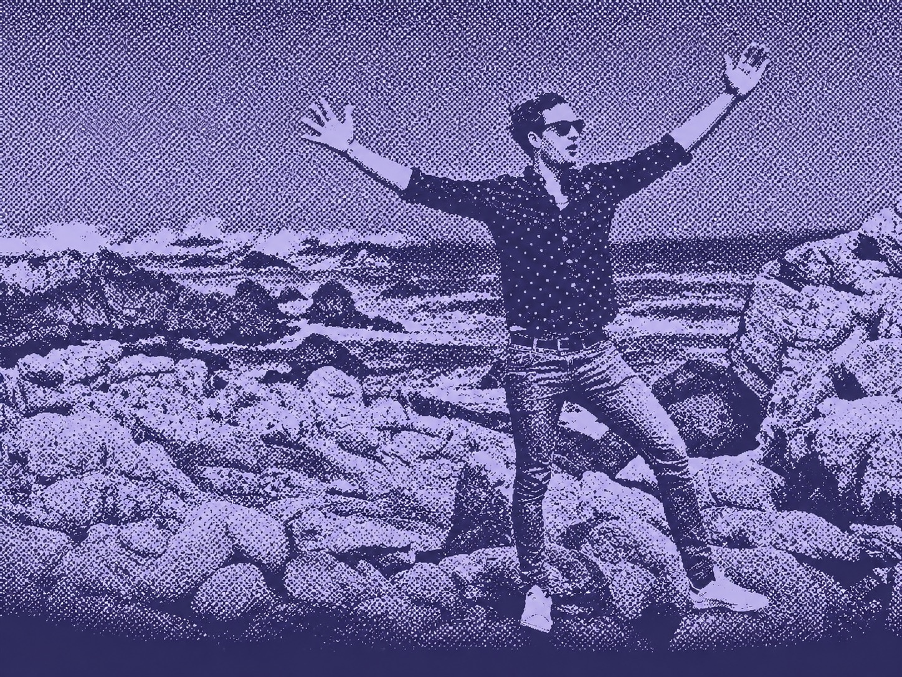

m@tthisk:~$ fetch
- m@tthisk.com
This is a terminal-flavoured home page. Use the status line at the bottom to move between windows, or press 0–3. Prefer something quieter? Try the .
m@tthisk:~$ chafa img/pixel-profile-2.jpeg

Recent posts
m@tthisk:~$ ls -t blog/ | head -3
m@tthisk:~$ fortune | cowsay
m@tthisk:~$
keys: 0-3 windows · ctrl+b ? help
Blog
Projects
m@tthisk:~$ tree -L 2 projects/
projects/
m@tthisk:~$
About
m@tthisk:~$ cat about.txt
m@tthisk:~$ cat ~/.config/me.toml
m@tthisk:~$ git log --oneline -5 -- career/
Details
Career
m@tthisk:~$